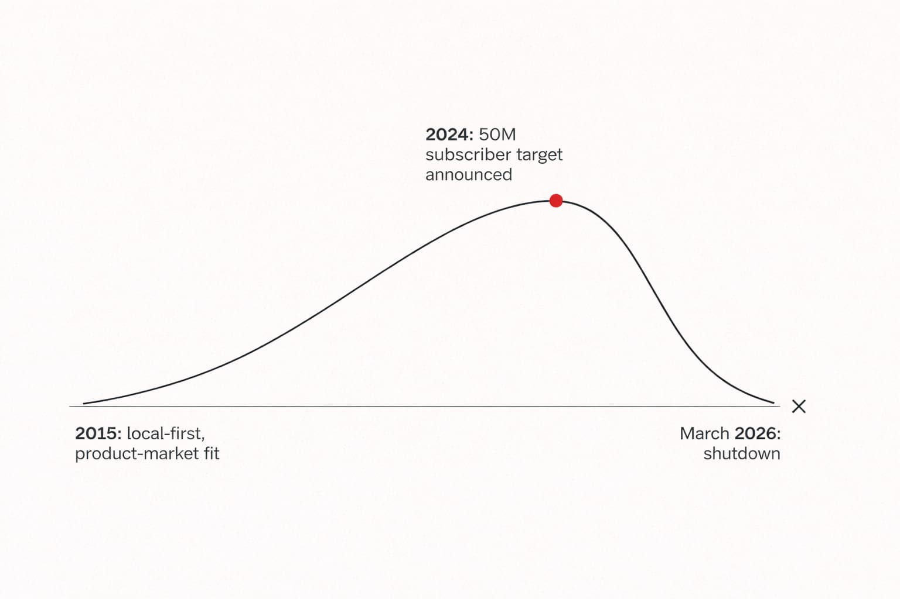
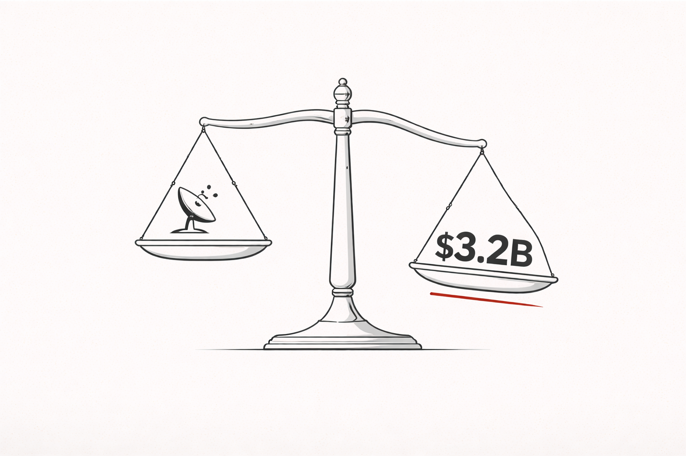

In March 2026, Canal+ shut down Showmax after accumulating roughly 370 million euros in losses before the acquisition - then watched trading losses widen a further 88% in FY2025 alone, after a 309-million-dollar relaunch with Comcast. At the same time, they announced a 100-million-euro turnaround plan for MultiChoice built around hiring 1,000 salespeople across Africa.
The distribution play makes sense on the surface. Canal+ markets have 3.5 times more points of sale per electrified household than MultiChoice markets. The gap is real and closeable. Physical distribution has worked in African consumer markets before - M-KOPA, Jumia's J-Force agents, Coca-Cola's micro-distribution centers. I understand the logic.
But I keep coming back to a different question. One that the turnaround plan does not answer.
What actually happened to Showmax? Because the story most people are telling - streaming is hard in Africa, data costs are too high, infrastructure is the bottleneck - is not wrong exactly. It just starts in the wrong place.
Showmax Was Not a Failure. It Was a Success That Got Promoted Into Failure.
Let me start with what actually happened to Showmax, because the received wisdom is wrong and it matters.
Showmax launched in South Africa in 2015 with a positioning that was genuinely smart for the market: African content first, local currency pricing, carrier billing through Vodacom and M-Pesa, download-for-offline viewing to manage data costs. By November 2023, it had 2.1 million subscribers and had displaced Netflix - which had spent years and hundreds of millions of dollars trying to crack the same market - to become Africa's most popular streaming service.
Read that again. A local African streaming service, built around operator-level distribution intelligence and local content, beat Netflix on its own continent. That is not a failure story. That is a case study in getting emerging market positioning right.
So what went wrong?
In early 2024, Showmax announced a target of 50 million subscribers and 1 billion dollars in revenue over five years. They relaunched the platform on Comcast's Peacock technology, brought in HBO and Warner Bros. content, cut subscription prices by nearly 50% to chase subscriber volume, and structured the whole thing as a growth story for investors.
That sequence is the mistake. Not the execution of it. The decision to make it at all.

The Showmax arc. The inflection point was not the market. It was the ambition.
Here is what the strategic logic looked like from the inside: we have a winning local platform, we have a Comcast partnership and access to premium international content, we have the MultiChoice distribution infrastructure behind us. If we can scale from 2 million to 50 million subscribers, we have a billion-dollar streaming business. The market is there. Africa's population is young, growing, urbanising. Let's go get it.
Here is what the strategic logic looked like from the outside, if you had spent twelve years running digital products in these markets: you just took a correctly-positioned business and gave it an incorrectly-sized ambition.
A 3 to 5 million subscriber African streaming service, built local-first, priced for what the market can actually afford, with carrier billing and mobile-first infrastructure, is a real and defensible business. Not a unicorn. Not a billion-dollar story. A solid operator business that compounds quietly and throws off cash at the right scale.
"The moment you announce 50 million subscribers as your target, that business no longer exists. You have replaced it with a growth obligation."
And growth obligations in markets where the median Lagos worker earns N60,000 a month - below the national minimum wage - require a product that the market cannot currently sustain.
Then the naira collapsed. Then South African inflation hit household budgets. Then Warner Bros. pulled their content in January 2026 after a rights renewal failed. In the three years before the Canal+ takeover, Showmax had accumulated approximately 370 million euros in losses. Then came the 2024 Comcast relaunch - the pivot toward the 50-million-subscriber ambition. In FY2025 alone, trading losses widened a further 88% to $297 million, while revenue fell to $45 million against a target of $1 billion. The relaunch did not slow the bleeding. It accelerated it.
The total loss across the platform's final years was not the cost of failure. It was the cost of refusing to accept success at the right scale.
Now Look at What Canal+ Just Did.

$3.2 billion for a business in structural decline. That price is not neutral.
Canal+ acquired MultiChoice for 3.2 billion dollars, completing the deal in September 2025.
I want you to sit with that number for a moment. 3.2 billion dollars for a business whose subscriber base was already in decline, whose flagship streaming platform was losing money, and whose two largest markets were being structurally hollowed out by currency devaluation and inflation.
That is not a price you pay for an African operator business. That is a price you pay for a growth story.
And the moment you pay 3.2 billion dollars for something, you have made it structurally impossible to run it at the right size. You need the growth story. Your investors need the growth story. The JSE secondary listing announced for June 2026 needs the growth story. So everything that follows - the 1,000 salespeople, the subscriber recovery targets, the turnaround plan - is not really about what African consumers need. It is about justifying a 3.2 billion dollar acquisition price to shareholders in Paris.
I am not saying the turnaround plan is wrong. Some of it is directionally correct. Killing Showmax was right. Simplifying 17 packages into something coherent is right. Investing in local content at scale, now that the combined group has 42 million subscribers to amortize that cost across, is right.
But here is the question the financial press is not asking: what would a correctly-sized, correctly-priced African pay-TV business actually look like?
Not 42 million subscribers. Not a billion dollars in revenue. Something built around what the market can genuinely sustain. Weekly billing cycles that match how people in Lagos actually manage cash. A Premium tier priced at what a median urban professional can afford monthly, not at what the Paris finance team needs for ARPU. Local content that is genuinely excellent rather than excellent-by-African-standards-while-we-wait-for-the-money-to-flow.
Would that be a bad business? No. It would be a good business. Would it justify a 3.2 billion dollar acquisition? Also no.
And that is the trap Canal+ has walked into. Not through stupidity - Canal+ management is sophisticated and they have turned around harder situations. But through the structural logic of large acquisitions in emerging markets: the valuation creates an obligation to overshoot what the market can currently support.
The Operator Pattern I Keep Seeing
I have watched this play out in different forms across fintech, telecom, and e-commerce in African markets over the past twelve years.
The pattern is always the same. A company builds something that works at a modest scale, with genuine product-market fit for the actual addressable market at current income levels. Then either external capital arrives, or an acquisition happens, or the founders look at the demographic projections and decide the market is about to explode, and the business gets repositioned for a much larger ambition.
The new ambition requires a different cost structure. The different cost structure requires higher prices or higher volume. The market cannot immediately support either. The business burns cash while waiting for the market to catch up with the ambition. Sometimes the market catches up. More often, it does not catch up fast enough, and the business either collapses or gets restructured back to something resembling what it was before the ambition arrived.
The pattern repeats across sectors. The red dot is never a market problem. It is a valuation problem.
This is not a Canal+ problem or a Showmax problem. It is an emerging market valuation problem. The demographics of Africa are genuinely compelling on a 20-year horizon. The income levels of Africa are genuinely constrained on a 3-year cash runway. The gap between those two timeframes is where most large African market investments go wrong.
Airtel Africa understood this, which is why I analysed their pivot as a deliberate choice to go deep rather than wide - shedding markets, focusing infrastructure investment, accepting a smaller revenue number in exchange for a defensible unit economics position. They chose to be correctly sized rather than impressively sized. MTN's acquisition of IHS Towers is the same logic applied to infrastructure: bring the asset in-house, control the cost structure, stop paying a margin to a neutral third party whose neutrality was economically fragile anyway.
Canal+ has done the opposite. They have made themselves bigger, not more defensible.
What I Am Actually Watching
The turnaround test I would apply in 18 months is not subscriber growth. It is Nigeria.
Nigeria drove roughly half of MultiChoice's losses. Canal+ itself acknowledged that short-term measures - price increases and reduced decoder subsidies - had a negative impact on the subscriber base, worsening the original profitability issues. A DStv Premium subscription at N44,500 costs more than 60% of what the median Lagos worker earns in a month, according to a 2024 survey of Lagos workers. Equipment subsidies and 1,000 salespeople do not solve that equation.
If Canal+ can stabilise Nigerian subscribers - not grow them, just stop the bleeding - the rest of the thesis is plausible. That would mean they found a pricing architecture that works for the actual market, not the projected market. It would mean the simplification plan went far enough to create genuinely affordable tiers. It would mean the distribution investment is addressing friction rather than just affordability.
If Nigeria continues declining, the acquisition thesis has a structural problem that salespeople cannot fix.
Africa's entertainment market will be worth over 15 billion dollars by 2030. That number is real. The question is not whether someone captures it. The question is whether you can build toward that number without spending the next five years trying to make the market be what your acquisition price needs it to be, rather than what it actually is right now.
"The most dangerous thing you can do to a correctly-positioned emerging market business is give it an obligation it cannot yet afford to meet."
Canal+ is a sophisticated operator. They may thread this needle. But the lesson of Showmax is sitting right there in the press release announcing its closure, if anyone is willing to read it carefully.
Broadband TV News: Canal+ sets out MultiChoice turnaround plan, March 12, 2026
Variety: Canal+ 2025 full-year results, March 11, 2026
Technext: Canal+ to hire 1,000 salespeople across Africa, March 2026
Rest of World: How Showmax dethroned Netflix in Africa, January 2025
Tech In Africa: Canal+ to shut down Showmax, March 2026
Technext: Showmax shutdown and losses, March 2026
Variety: Netflix Africa vs Showmax, March 2024
Joburg ETC: DStv changes Canal+ plan, March 2026
Guardian Nigeria: Canal+ turnaround plan, March 2026
Early.app: Average salary Nigeria 2024
Statista: Nigeria mobile internet penetration 2024